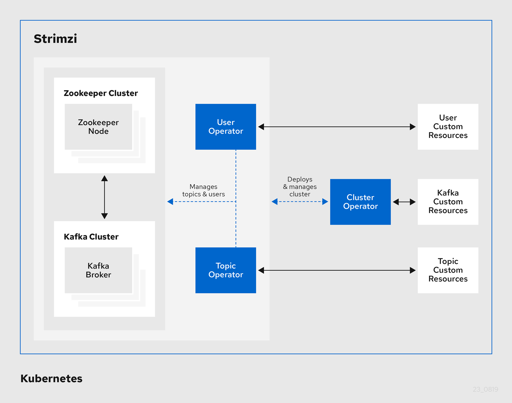

sed -i 's/namespace: .*/namespace: my-namespace/' install/cluster-operator/*RoleBinding*.yamlStrimzi is based on Apache Kafka, a popular platform for streaming data delivery and processing. Strimzi makes it easy to run Apache Kafka on Kubernetes.
Strimzi provides three operators:
Responsible for deploying and managing Apache Kafka clusters within a Kubernetes cluster.
Responsible for managing Kafka topics within a Kafka cluster running within a Kubernetes cluster.
Responsible for managing Kafka users within a Kafka cluster running within a Kubernetes cluster.
|
Note
|
The Cluster Operator can deploy the Topic Operator and User Operator (as part of an Entity Operator configuration) at the same time as a Kafka cluster. |

Designed for horizontal scalability
Message ordering guarantee at the partition level
Message rewind/replay
"Long term" storage allows the reconstruction of an application state by replaying the messages
Combines with compacted topics to use Kafka as a key-value store
For more information about Apache Kafka, see the Apache Kafka website.
In this document, replaceable text is styled in monospace and italics.
For example, in the following code, you will want to replace my-namespace with the name of your namespace:
sed -i 's/namespace: .*/namespace: my-namespace/' install/cluster-operator/*RoleBinding*.yamlUse the instructions in this Quick Start Guide to install Strimzi and start sending and receiving messages from a topic in minutes.
You will:
Install and start Minikube
Install Strimzi
Create a Kafka cluster
Access the Kafka cluster to send and receive messages
Ensure you have the prerequisites and then follow the tasks in the order provided in this chapter.
Download a ZIP file that contains the resources required for installation along with examples for configuration.
Access to GitHub
Download the strimzi-x.y.z.zip file from GitHub.
Unzip the file to any destination.
On Windows or Mac, you can extract the contents of the ZIP archive by double clicking on the ZIP file.
On Linux, open a terminal window in the target machine and navigate to where the ZIP file was downloaded.
Extract the ZIP file by executing the following command:
unzip strimzi-xyz.zipUsing the download files, install Strimzi with the Custom Resource Definitions (CRDs) and RBAC configuration required for deployment.
In this task you create namespaces in the cluster for your deployment. It is good practice to use namespaces to separate functions.
Installation requires a Kubernetes account with cluster admin credentials.
Log in to the Kubernetes cluster with cluster admin privileges.
Create a new kafka namespace for the Strimzi Kafka Cluster Operator.
kubectl create ns kafkaModify the installation files to reference the kafka namespace where you will install the Strimzi Kafka Cluster Operator.
|
Note
|
By default, the files work in the myproject namespace.
|
On Linux, use:
sed -i 's/namespace: .*/namespace: kafka/' install/cluster-operator/*RoleBinding*.yamlOn Mac, use:
sed -i '' 's/namespace: .*/namespace: kafka/' install/cluster-operator/*RoleBinding*.yamlCreate a new my-kafka-project namespace where you will deploy your Kafka cluster.
kubectl create ns my-kafka-projectEdit the install/cluster-operator/050-Deployment-strimzi-cluster-operator.yaml file and set the STRIMZI_NAMESPACE environment variable to the namespace my-kafka-project.
# ...
env:
- name: STRIMZI_NAMESPACE
value: my-kafka-project
# ...Deploy the CRDs and role-based access control (RBAC) resources to manage the CRDs.
kubectl apply -f install/cluster-operator/ -n kafkaGive permission to the Cluster Operator to watch the my-kafka-project namespace.
kubectl apply -f install/cluster-operator/020-RoleBinding-strimzi-cluster-operator.yaml -n my-kafka-projectkubectl apply -f install/cluster-operator/032-RoleBinding-strimzi-cluster-operator-topic-operator-delegation.yaml -n my-kafka-projectkubectl apply -f install/cluster-operator/031-RoleBinding-strimzi-cluster-operator-entity-operator-delegation.yaml -n my-kafka-projectThe commands create role bindings that grant permission for the Cluster Operator to access the Kafka cluster.
Create a Kafka cluster, then a topic within the cluster.
When you create a cluster, the Cluster Operator you deployed watches for new Kafka resources.
For the Kafka cluster, a Cluster Operator is deployed
For the topic, a running Kafka cluster
Log in to the Kubernetes cluster as a non-privileged user.
Create a new my-cluster Kafka cluster with one Zookeeper and one Kafka broker.
Use persistent-claim storage
Expose the Kafka cluster outside of the Kubernetes cluster using an external listener configured to use a nodeport.
cat << EOF | kubectl create -n my-kafka-project -f -
apiVersion: kafka.strimzi.io/v1beta1
kind: Kafka
metadata:
name: my-cluster
spec:
kafka:
replicas: 1
listeners:
plain: {}
tls: {}
external:
type: nodeport
tls: false
storage:
type: jbod
volumes:
- id: 0
type: persistent-claim
size: 100Gi
deleteClaim: false
config:
offsets.topic.replication.factor: 1
transaction.state.log.replication.factor: 1
transaction.state.log.min.isr: 1
zookeeper:
replicas: 1
storage:
type: persistent-claim
size: 100Gi
deleteClaim: false
entityOperator:
topicOperator: {}
userOperator: {}
EOFWait for the cluster to be deployed:
kubectl wait kafka/my-cluster --for=condition=Ready --timeout=300s -n my-kafka-projectWhen your cluster is ready, create a topic to publish and subscribe from your external client.
Create the following my-topic custom resource definition with 3 partitions and replication factor 1 in the my-cluster Kafka cluster:
cat << EOF | kubectl create -n my-kafka-project -f -
apiVersion: kafka.strimzi.io/v1beta1
kind: KafkaTopic
metadata:
name: my-topic
labels:
strimzi.io/cluster: "my-cluster"
spec:
partitions: 3
replicas: 1
EOFTest your Strimzi installation by sending and receiving messages to my-topic from outside the cluster.
Use a terminal to run a Kafka producer and consumer on a local machine.
Strimzi is installed on the Kubernetes cluster
Zookeeper and Kafka are running
Download the latest Kafka binaries and install Kafka on your local machine.
Find the port of the bootstrap service:
kubectl get service my-cluster-kafka-external-bootstrap -n my-kafka-project -o=jsonpath='{.spec.ports[0].nodePort}{"\n"}'Find the IP address of the Minikube node:
kubectl get nodes --output=jsonpath='{range .items[*]}{.status.addresses[?(@.type=="InternalIP")].address}{"\n"}{end}'Open a terminal and start the Kafka console producer with the topic my-topic:
bin/kafka-console-producer.sh --broker-list <node-address>:_<node-port>_ --topic my-topicType your message into the console where the producer is running.
Press Enter to send the message.
Open a new terminal tab or window and start the consumer to receive the messages:
bin/kafka-console-consumer.sh --bootstrap-server <node-address>:_<node-port>_ --topic my-topic --from-beginningConfirm that you see the incoming messages in the consumer console.
Press Crtl+C to exit the Kafka console producer and consumer.